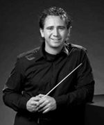

Auletes
Auletes is een ondervereniging van het Eindhovens Studenten Muziek Gezelschap Quadrivium. Quadrivium is opgericht in 1964 en bestaat uit een gemengd koor, een kamerorkest, een blokfluitensemble en een harmonieorkest. Daarnaast heeft de vereniging leden die enkel gebruik maken van de repetitieruimtes en piano's, de zogenaamde pianoleden. Quadrivium is Latijn voor 'viersprong' en refereert aan de middeleeuwse opleiding aan de universiteit, bestaande uit rekenkunde, meetkunde, muziek en astronomie. Het harmonieorkest Auletes is de grootste ondervereniging van ESMG Quadrivium. Ongeveer één keer per jaar gaat Auletes de uitdaging aan om een groot avondvullend project op de planken te zetten. Enkele recente successen zijn uitvoeringen van de Carmina Burana van Orff en The Queen Symphony van Kashif.
Sinds oktober 2008 staat harmonieorkest Auletes van ESMG Quadrivium onder leiding van Jos Schroevers. Jos studeerde slagwerk aan het Sweelinck Conservatorium te Amsterdam en het Brabants Conservatorium in Tilburg. Daarnaast volgde hij ook de studie Hafa-directie. Deze studie werd met succes in 2001 afgesloten. In 2005 is Jos gestart met de studie 2e fase Hafa-directie aan het Koninklijk Conservatorium in Den Haag welke opleiding hij in 2008 heeft afgerond. In de tussentijd volgde Jos diverse masterclasses en nam hij regelmatig privélessen, bij onder andere Maurice Hamers, Valery Gergiev, Alex Schillings, Heinz Friesen, Norbert Nozy, Hans Leenders en Jan Cober. Als dirigent is Jos momenteel actief bij enkele orkesten uit de 1e en 2e divisie. Daarnaast had Jos in 2007 en 2008 de muzikale leiding bij het Zomer Orkest Nederland, en is hij assistent-dirigent bij Sophia's Vereeniging uit Loon op Zand. In april 2005 bereikte Jos een plek in de halve finale van de Europese dirigentenwedstrijd in Groningen en in 2009 behaalde hij een vierde plek tijdens de internationale dirigentenwedstrijd van het WMC in Kerkrade.